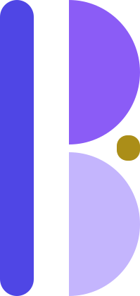
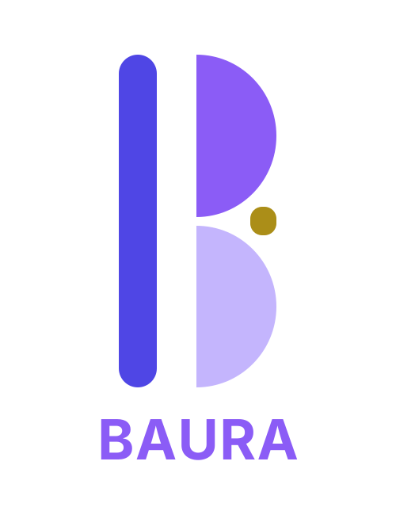
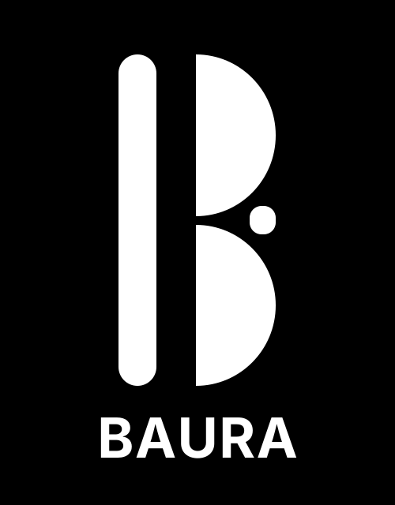

Charte graphique BAURA
Symbole, couleurs, typographie et règles d'usage – BAURA OS
1. Le symbole
Un « B » construit avec trois formes simples : une barre arrondie et deux demi-disques. Le petit point doré dans le creux est la signature, l'« aura ».
Couleur – sur fond clair
Noir – impression, documents
Blanc – sur fond sombre
2. Logo avec le nom
Symbole au-dessus du mot BAURA (Inter Bold). À utiliser quand il y a la place ; sinon, le symbole seul suffit.

Couleur
Noir

Blanc sur noir
3. Couleurs
Indigo
Violet
Lavande
Or
Nuit
Brume
- Proportion conseillée : 70 % neutres (blanc / nuit), 25 % indigo-violet-lavande, 5 % or.
- Le texte violet #8B5CF6 sur blanc a un contraste limité : pour le texte courant, préférer Nuit #0F0B2E ou Indigo #4F46E5.
4. Typographie
Inter Bold – Titres & nom
Inter Regular / Medium – interface et texte courant. 14 à 16 px dans les fenêtres, titres en 600–700.
Alternative disponible partout : Segoe UI / system-ui.
5. Icônes d'application
Carré arrondi sombre avec le symbole en couleur. Fournies en SVG, PNG (1024, 512, 192, 180) et favicon (16, 32, 48, .ico).


6. Règles d'usage
À faire
- Laisser autour du symbole un espace libre au moins égal à la largeur de la barre.
- Utiliser la version couleur sur blanc ou Nuit, la version blanche sur fond foncé ou coloré.
- Taille minimale : 16 px de haut pour le symbole, 48 px pour le logo avec le nom.
À éviter
- Déformer, tourner ou changer les proportions du symbole.
- Modifier l'ordre ou les couleurs des trois formes.
- Poser la version couleur sur un fond violet ou indigo (utiliser le blanc).
- Enlever le point doré dans la version couleur.